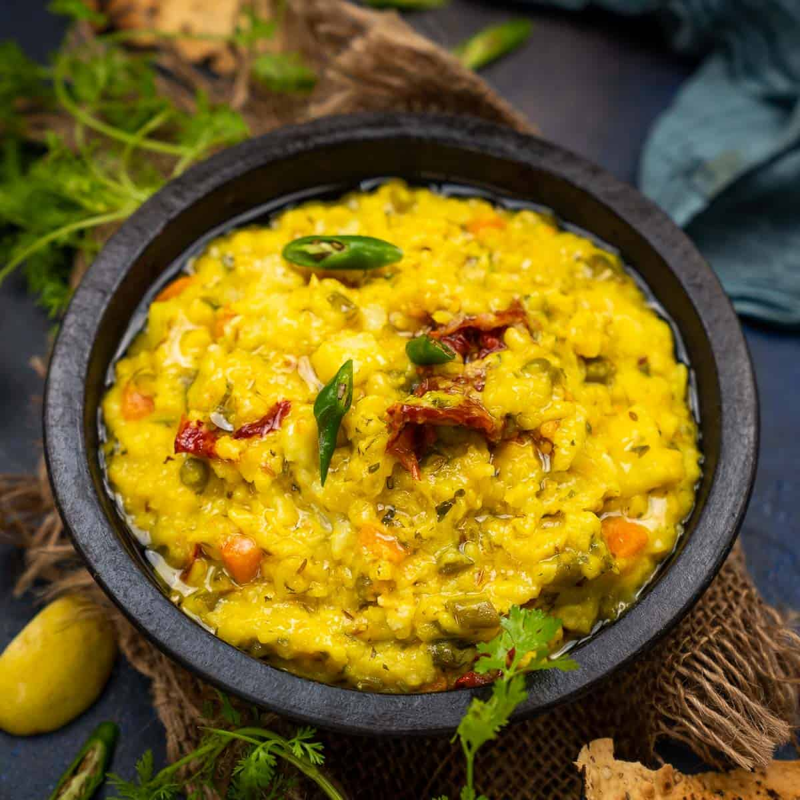

Cook Time: 1-1:30mins
Serves: 2-3 servings
| INGREDIENTS | QUANTITY |
|---|---|
| Boiled basmati rice | 2 cup |
| Chicken | 1 kg |
| Mint leaves | 1/2 tbsp |
| Garam masala | 1 tsp |
| Salt | as requried |
| Cloves | 2 |
| gren chillies | 6 |
| Ginger past | 1 tbsp |
| curd | 1 1/2 Cup |
| Ghee | 1 tbsp |
| Coriander | 4 tbsp |
| Onion | 4 |
| Red chilli powder | 2 tbsp |
| bay leaves | 2 tbps |
| cumin seeds | 2 tbsp |
| water | as requried |
| Garlic paste | 2 tbsp |
STEP-1: Prepare saffron-kewra water and chop veggies
To make a delightful chicken biryani dish firstly soak saffron in water to prepare saffron water (One tsp saffron can be soaked in 1/4 cup water). Next, mix kewra drops in water and mix well to make kewra water. Set them aside for later usage. Now chop the onion and coriander leaves and keep them aside.
STEP-2: Saute the onions
Meanwhile, heat refined oil in a deep bottomed pan. Once the oil is hot enough, add cumin seeds, bay leaf, green cardamom, black cardamom, cloves in it, and saute for about a minute. Then, add chopped onion to it and saute until pink. Now, add chicken into it with slit green chillies, turmeric, salt to taste, ginger garlic paste, red chilli powder and green chilli paste. Mix well all the spices and cook for 2-3 minutes. Then, add hung curd into it and give a mix.
STEP-3: Cook biryani on low heat for 5-6 minutes</p>
Turn the flame to medium again and add garam masala in it along with ginger julienned, coriander and mint leaves. Add kewra water, rose water and saffron water in it. Cook till the chicken is tender. Then add 1 cup cooked rice and spread evenly. Then add saffron water and pour ghee over it. You can now cook the dish without the lid or cover it with a lid to give a dum-effect due to the steam formation.
STEP-4: serve hot chicken biryani with your favourite chutney or raita
Cook for 15-20 minutes with a closed lid and garnish with 1 tbsp fried onions and coriander leaves. Serve hot chicken biryani with raita of your choice. Enjoy!

Total Time: 20 minutes
*20 mins prep
Serves:2
| INGREDIENTS | QUANTITY |
|---|---|
| slices bread slices | 5 |
| large boiled potato | 2 |
| cup boiled peas | 1/4 |
| teaspoon chaat masala | 1/2 |
| teaspoon black pepper | 1/4 |
| teaspoon red chilli powder | 1/2 |
| Salt | as requried |
| small onion | 1 |
| tablespoon tomato ketchup | 2 |
| tablespoon green chutney | 2 |
| garam masala powder | 2 tbps |
STEP-1: Prepare a mixture
Add boiled potato to a bowl. Now add chopped onion, boiled peas, salt, chaat masala, black pepper powder, garam masala and red chilli powder. Mix well to prepare a mixture.
STEP-2: Make a sandwitch
Now spread one tbsp ketchup on one slice and one tbsp mint chutney on another slice. Use half the mixture and spread on one slice. Top it off with another slice. Press it down a bit to prepare a sandwich. Make one more sandwich by repeating the step.
STEP-3: Ready to be served
You can chop off the edges of the bread slices before serving. You can also grill the sandwich by applying butter on both sides and serve it with ketchup and chutney.

Total Time: 30 minutes
*10 mins prep / 20 hours cook
Serves: 4
| INGREDIENTS | QUANTITY |
|---|---|
| Rice | 1 cup |
| Moong dal | 1 Cup |
| Toor dal | 1 Cup |
| Cumin seeds | 1 tbps |
| Ghee | 1 1/2 tbps |
| Asafoetida | 1 tbbsp |
| Cinnamon | 1 dash |
| Sugar | 1 tsp |
| peas | 1/4 Cup |
| Cauliflower | 1/3 Cup |
| potato | 1/4 Cup |
| Bay leaf | 1 |
| Ginger | 1 1/2 tsp |
| Coriander leaves | 1 sprigs |
STEP-1: Dry roast the lentils and wash the rice and the lentils
First, wash the dals and soak them in water for some time. Next, take a bowl and wash the rice in running water 5-6 times and soak it for half an hour.
STEP-2: Fry potato and cauliflower in ghee
Now, put a pressure cooker on medium flame and heat ghee in it. When the ghee is hot enough, add cumin seeds, bay leaf, asafoetida, cinnamon in ghee and fry them for a few seconds. Next, add turmeric, ginger paste and sauté for 2-3 minutes. Finally, add the potato, peas and cauliflower along with salt and sugar. Stir well and cook on medium to high flame for 2-3 minutes. Once the vegetables are cooked, add soaked rice in it along with dal. Mix well all the ingredients and cook for 4-5 minutes.
STEP-3: Cooking in the pressure cooker
Now, add 3-4 cups of water to the rice and close the pressure cooker with its lid. Pressure cook for 3 whistles and turn off the flame. Let the steam release on its own
STEP-4 serve hot with a little ghee, papad, achaar, and raita.

Total Time: 40 minutes
*20 mins prep
Serves: 4
| INGREDIENTS | QUANTITY |
|---|---|
| Basmati Rice | 4 cups |
| Onion | 3 |
| tomato | 3 |
| Mustard seeds | 1 tbps |
| Chana dal | 1 tsp |
| Ginger | 2 tbsp |
| Raw Peanuts | 1/2 Cup |
| Cashews | 1 Cup |
| Asafoetida | 1/2 tbps |
| Curry leaves | 3 stalks |
| Red chilli powder | 1 tbsp |
| Turmeric | 1/3 tbsp |
| Ghee | 2 tbsp |
| Refined Oil | 4 tbps |
| Coriander leaves | 4 |
STEP-1: Boil the rice
Take rice in a big bowl. Wash it properly 3-4 times and then wash once under running water. Now add 8 cups of water to a pot and bring it to a boil. Add rice to the pot and cook until all the water has been absorbed and evaporated.
STEP-2: Saute the tadka ingredients
Heat refined oil in a pan. Add mustard seeds, chana dal and chopped ginger. Saute them for a minute. Now add peanuts and stir till it gets cooked. Now add cashew nut, curry leaves and asafoetida. Mix all the ingredients well.
STEP-3: Saute onions and tomatoes
Now add chopped onions, stir and saute till golden brown in colour. Now add chopped tomatoes along with salt as per taste. Cook the tomatoes for 6-8 minutes or until mushy.
STEP-4: Add spices
Now add kashmiri red chilli powder, turmeric powder and cook for a minute. Lastly, add desi ghee to give the masala a nice fragrance and taste.
STEP-5: Final mixing
Now add boiled rice to the tomato masala along with finely chopped coriander leaves. Mix well, cook for last one minute and switch off the flame.
STEP-6: Ready to be served
Your lip-smacking Tomato Rice is now ready to be served. Enjoy!

Total Time: 30 minutes
*15mins prep
Servings: 4
| INGREDIENTS | QUANTITY |
|---|---|
| Minced chicken | 400 gm |
| Curry leaves | 3 stalks |
| Onion | 2 medium |
| Tomato puree | 1/2 cups |
| Red chilli powder | 1 tbps |
| Turmeric | 1/2 tbps |
| Black pepper | 1/2 tbps |
| Garam masala powder | 1/2 tbps |
| cumin seeds | 1tbsp |
| Garlic paste | 1 tbsp |
| Ginger paste | 1 tbps |
| Coriander leaves | 2 tbps |
| Vegetable Oil | 2 tbps |
| Salt | As requried |
| Dosa batter | As requried |
| Water | As requried |
STEP-1: Prepare the masalaHeat oil in a pressure cooker. Add cumin seeds, curry leaves, ginger paste and garlic paste. Saute for a minute. Add chopped onions to it and saute for another two minutes. Now add tomato puree, red chilli powder, turmeric, black pepper powder, garam masala and salt. Let the masala cook for 3-4 minutes.
STEP-2: Cook the chickenNow add the minced chicken to the cooker and mix well with the masala. Add 3/4 cup water, mix and close the lid. Cook for 8-10 minutes. After that, if there is still any water left, cook on high heat for 2 minutes to get rid of water. Garnish with chopped coriander leaves.
STEP-3: Prepare the dosa and serveSpread the dosa batter on the tawa and spread it properly. Cook the dosa from both sides. Fill 2-3 tablespoon of masala in each dosa and serve with chutney and sambhar. Enjoy!

Total Time: 30 minutes
*10mins prep
Servings: 12
| INGREDIENTS | QUANTITY |
|---|---|
| Milk | 10 tbps |
| Salt | As requried |
| Eggs | 4 |
| Black pepper | 1 tbps |
| Vegetable Oil | 1 tbps |
| Sliced spinach | 3/4 cup |
| red bell pepper | 1 diced |
| cheese-Cheddar | 1/4 Cup |
STEP-1: To make this delicious recipe, heat the oven at 176-degrees Celsius. With the help of a silicon brush, apply oil on the muffin tray.
STEP-2:Bring a large bowl and add milk and beat the eggs. Add salt and black pepper to taste. Whisk thoroughly. Add the shredded cheddar cheese, diced bell pepper and sliced spinach leaves to the egg mixture and mix it well.
STEP-3:Fill 3/4 of the cups in the tray with the mixture. Place the tray in the oven and bake for 20 minutes. When done, de-mold the egg cups and serve warm with any ketchup of your choice.
Drink type: Mocktile
Non-Alcholic
| INGREDIENTS | QUANTITY |
|---|---|
| Black coffee-tini | 40 ml |
| Cranberry juice | 40 ml |
| Cane sugar | 10 gm |
| lime | 1 |
| Ice cubes | As requried |
STEP-1: Add coffee along with cranberry juice in a cocktail shaker Take a cocktail shaker and half-fill it with ice. Measure the cane sugar or syrup, cranberry juice, and coffee.
STEP-2: Shake the ingredientsNow, add lime juice to the shaker and put the other half of the shaker on top and shake well.
STEP-3: Strain and serve with coffee beans on topStrain the drink into a chilled cocktail glass and garnish with coffee beans on top. If you don't have coffee beans, you can add coffee powder on top of the drink and enjoy.

Drink type: coffee
Non-Alcoholic
| INGREDIENTS | QUANTITY |
|---|---|
| Espresso coffee | 1 ounce |
| Milk | 100 ml |
| Honey | 2 tbps |
| Low fat cream | 60 ml |
| banana | 1 |
| Chocolate syrup | 1 tbps |
| Ice cubes | As requried |
STEP-1: Blend the banana, ice cubes and honey In a blender, add chopped banana pieces, ice cubes and honey. Blend to form a paste.
STEP-2: Add all the other ingredientsNow add milk, low fat cream and an espresso coffee shot. Again blend until it forms a smooth mixture.
STEP-3: Ready to be servedPour the Coffee into a glass and drizzle chocolate syrup on top. Your Creamy Honey Coffee is now ready to be served.

Drink type: Herbal tea
Healthy
| INGREDIENTS | QUANTITY |
|---|---|
| Cumin seeds | 3 tbps |
| Cinnamon | 1/2 tbps |
| Water | 1 liter |
| Honey | 1/2 tbps |
STEP-1: Boil water with cumin and cinnamon Take a large saucepan and put it over medium flame with 1 litre of water in it. Bring it to a boil and then add cumin seeds in it along with the cinnamon stick.
STEP-2: Boil the spices for 5 minutesLet the spices boil for 5 minutes or more or until the flavours are absorbed. Once done, turn off the flame and let the water cool for some time.
STEP-3: Strain and mix honey Afterwards, strain the drink into a tall glass and add 1 tsp honey to it. Mix it well and drink.